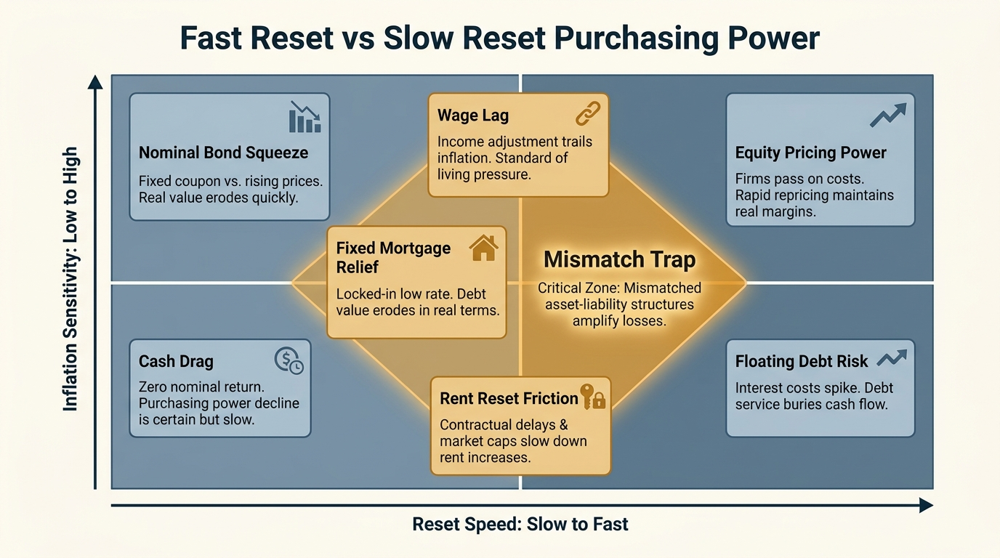

The Inflation Ladder Problem
Most households talk about inflation as if it were one number moving through the economy at one speed. Their balance sheet does not work that way. Cash loses purchasing power immediately. Wages may reset annually, late, or not at all. Rents reprice on lease turns. Bond coupons stay fixed. Debt can either erode in real terms or reprice against you, depending on structure. Inflation therefore climbs through a household on a reset ladder, not as one clean macro shock.
That ladder is what many net-worth screens miss. A family can look stable on paper while its liquid reserves are quietly shrinking in real terms, its nominal bond ladder is locking in inadequate spending power, and its compensation or rent adjustments are arriving too slowly to close the gap. Wealth does not fail only when balances fall. It also fails when timing mismatches multiply faster than the household can reset them.
Core thesis: the inflation ladder problem is the mismatch between how fast prices move and how slowly the components of a household balance sheet reprice. Cash is hit first. Fixed nominal income and coupon streams are hit next. Wages, rents, fees, and tax thresholds update on uneven lags. The household that looks diversified in nominal terms can therefore be badly concentrated in reset risk.

Why The Average Inflation Number Is Not The Household Problem
The Bureau of Labor Statistics defines CPI as the average price change over time for a representative urban-consumer basket. That is useful for macro reporting. It is not the same thing as the inflation rate any one household experiences. Kaplan and Schulhofer-Wohl showed that household-level inflation can vary widely because households buy different things and, even within similar categories, often pay different prices. Inflation is therefore already heterogeneous before balance-sheet structure enters the picture.
The second complication is wealth composition. Schnorpfeil, Weber, and Hackethal show that households understand part of inflation's wealth effect, especially the erosion of nominal assets, but often miss how inflation also redistributes through debt. Doepke and Schneider made the same broad point earlier in macro form: unanticipated inflation reshuffles wealth between nominal lenders and borrowers. The headline number is only the top layer. The real question is where the household sits in the redistribution map.
This is why two families can live through the same inflation print and experience very different balance-sheet damage. One may hold short-duration cash and fixed nominal bonds while renting in a market that reprices fast. Another may hold a long fixed mortgage and inflation-sensitive labor income. Their macro environment is shared. Their ladder position is not.
How The Ladder Actually Works
At the bottom rung sits cash and cash-like balances. Inflation erodes those first because there is no contract reset to defend them. A savings account that earns below inflation is not neutral liquidity. It is a gradually shrinking reserve. The reserve may still be necessary, but the household should read it as a cost-bearing hedge, not as stable purchasing power.
The next rung is fixed nominal income and coupon streams. Bond ladders, annuity payments, or contractually fixed retirement withdrawals can look orderly while losing real spending power. Bodie's old purchasing-power annuity argument remains relevant because it isolates the exact failure: nominal stability is not real stability once the unit of consumption is moving. Brown, Mitchell, and Poterba made the same issue concrete in annuity markets. Many retirement-income products are fixed nominal streams, which means they convert longevity protection into inflation exposure unless another hedge is layered on top.
Above that sit labor income, rents, and business revenue. These can reprice, but usually with delay, bargaining friction, and imperfect indexing. Salary reviews tend to be episodic, not continuous. Small-business pricing power depends on market structure. Rental income resets on lease turnover, regulation, vacancy conditions, and local supply. The fact that these items can move does not mean they move fast enough.
The upper rungs include taxes, benefits, and liabilities. Some debt improves in real terms if it is fixed nominal and held through inflation. Other liabilities worsen if they float, refinance, or depend on rolling short-duration borrowing. Tax brackets, deductions, and benefit formulas may or may not adjust in line with actual household cost pressure. This is where the ladder becomes a systems problem rather than an asset-allocation slogan.
Why Nominal Bond Ladders Can Still Fail
Investors often hear the word ladder and infer safety. A nominal ladder is only safe in nominal space. If coupons and maturities line up neatly while consumption needs or service costs rise faster than those cash flows, the ladder can be operationally clean and still economically weak. The investor has matched dates but missed purchasing power.
This matters most when households confuse duration management with inflation management. A short ladder reduces some mark-to-market risk and creates periodic reinvestment opportunities, but it does not remove the risk that several years of low-real coupons coincide with cost increases that arrive immediately. The ladder is a timing tool. It is not, by itself, a real-income guarantee.
WealthMeter readers should therefore read a bond ladder in two dimensions: maturity schedule and reset quality. The first asks when cash returns. The second asks whether returned cash still buys what the plan assumed it would buy.

Where Households Usually Misread The Risk
The first misread is treating inflation as an investing issue rather than a household-architecture issue. A family can buy one inflation-sensitive asset and still be exposed if its reserves, income, insurance deductibles, and near-term liabilities all reset poorly. The problem lives in the whole stack.
The second misread is assuming that debt always helps under inflation. Fixed-rate debt can indeed become easier to service in real terms, but only if the household can keep the asset, keep the income, and avoid forced refinancing. The debt channel is beneficial only when the liability structure survives the path between today's nominal contract and tomorrow's higher nominal income.
The third misread is mistaking headline raises for restored purchasing power. A wage increase that arrives after a year of cost pressure may merely close past damage. If essential expenses repriced early and savings absorbed the gap, the household already paid the inflation tax before the salary reset arrived.
What A Better Response Looks Like
- Map reset speeds explicitly. Separate assets, income streams, and liabilities by how quickly they adjust in real terms.
- Distinguish cash reserve from purchasing-power reserve. The first is for immediate optionality. The second needs better inflation defense than ordinary idle balances.
- Test nominal ladders against real spending needs. Date matching is not enough if coupon streams lag consumption inflation materially.
- Read debt structure conditionally. Fixed nominal debt can help, but floating or refinance-dependent debt can climb the ladder against the household.
- Use asset mix to offset reset lag, not to chase one headline hedge. The goal is balance-sheet synchronization, not one-symbol inflation theater.
These steps are less dramatic than predicting the next CPI print. They are more useful. Inflation destroys balance sheets most effectively when households outsource the problem to macro commentary instead of mapping their own reset structure.
Known, Inferred, And Unknown
| Category | Assessment |
|---|---|
| Known | Official inflation measures are averages and do not capture the full variation in inflation experienced across households or consumption patterns. |
| Known | Inflation redistributes real wealth across holders of nominal assets and nominal liabilities rather than acting as a uniform tax on everyone. |
| Known | Fixed nominal retirement-income products and bond coupons can preserve payment stability while still allowing substantial erosion of real spending power. |
| Inferred | Many household wealth failures during inflation are timing mismatches across reset schedules rather than simple asset-allocation errors alone. |
| Unknown | Which practical household-control systems best synchronize income, reserves, debt, and inflation defenses without imposing excessive complexity or drag. |
The Practical Reading For WealthMeter
The inflation ladder problem belongs in the structural-trap category because it hides inside normal-looking balance sheets. A family can appear liquid, diversified, and income-secure while running a fragile reset structure. The relevant question is not whether inflation exists. The relevant question is how many rungs of the household reprice too slowly when it does.
This is why cash, TIPS, floating-rate exposure, equity claims on pricing power, fixed-rate debt, and wage bargaining should not be analyzed separately. They are all parts of one timing architecture. Wealth survives inflation more reliably when that architecture is coordinated instead of nominally diversified and operationally mismatched.
Further Reading Inside The Site
This article connects directly to The Cost-of-Capital Trap, The Asset-Rich, Cash-Poor Paradox, and The Rent vs Buy Reversal. Together they show why household wealth depends on carry structure, liquidity timing, and repricing power rather than headline net worth alone.
Source List
U.S. Bureau of Labor Statistics. Consumer Price Index.
Kaplan G, Schulhofer-Wohl S. Inflation at the Household Level. NBER Working Paper 22331. 2016; published 2017.
Doepke M, Schneider M. Inflation as a Redistribution Shock: Effects on Aggregates and Welfare. NBER Working Paper 12319. 2006.
Schnorpfeil P, Weber M, Hackethal A. Households' Response to the Wealth Effects of Inflation. NBER Working Paper 31672. 2023.
Bodie Z. Purchasing-Power Annuities: Financial Innovation for Stable Real Retirement Income in an Inflationary Environment. NBER Working Paper 442. 1980.
Brown JR, Mitchell OS, Poterba JM. Mortality Risk, Inflation Risk, and Annuity Products. NBER Working Paper 7812. 2000.